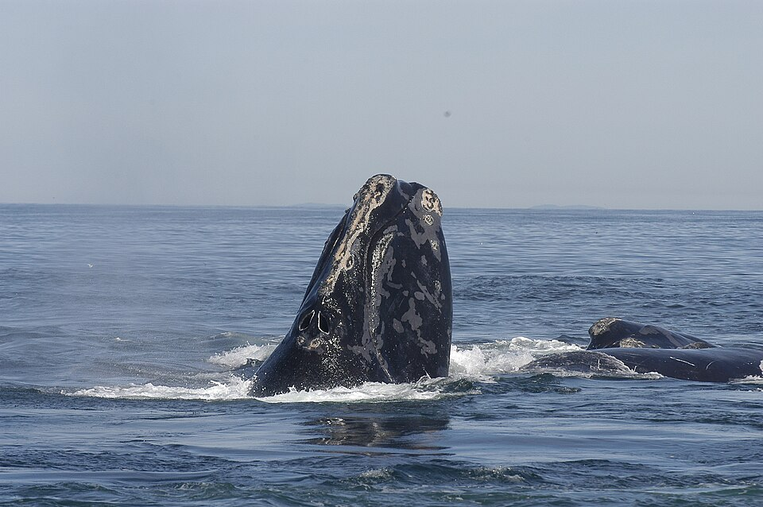
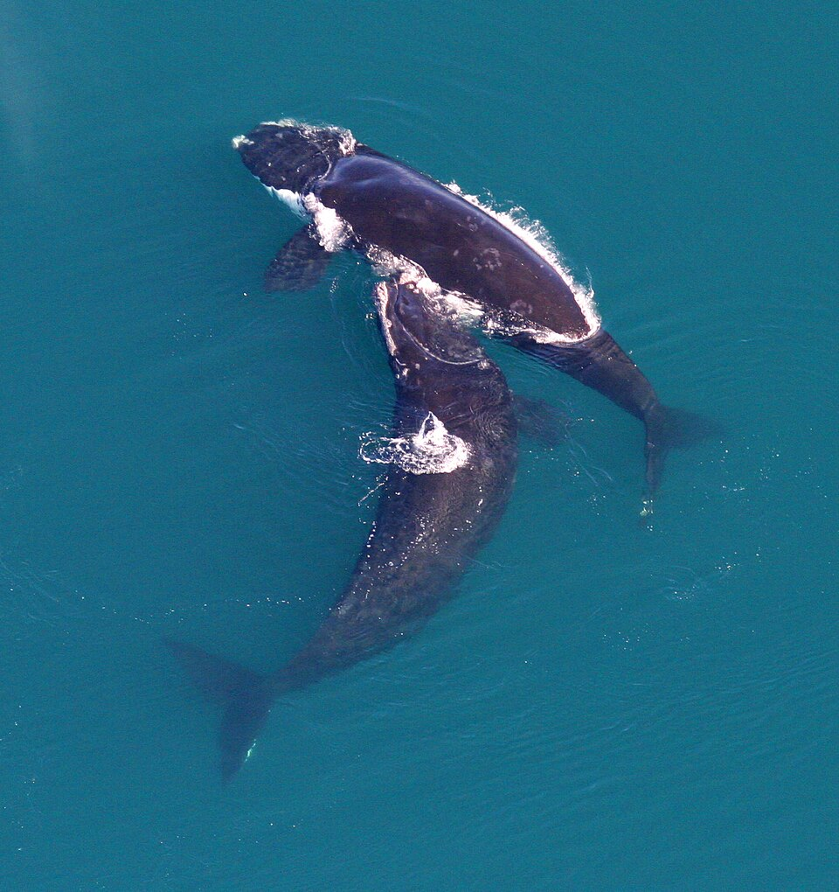
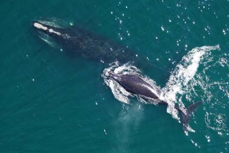

Baleia-Franca-do-Atlântico-Norte (Eubalaena glacialis)



Estado de conservação: A população atual é extremamente reduzida, estimada em menos de 350 indivíduos vivos no planeta.
Habitat: Águas temperadas e polares do Oceano Atlântico Norte. A população remanescente transita principalmente ao longo da costa leste da América do Norte.
Alimentação: Filtradora de plâncton. Alimenta-se principalmente de pequenos crustáceos zooplanctônicos, nadando com a boca aberta para filtrar a água através das barbas de baleia.
Principais ameaças:
- Emaranhamento em apetrechos de pesca: Cordas de armadilhas de lagosta e caranguejo causam lesões graves, infecções e afogamento.
- Colisões com embarcações: Navios de grande porte frequentemente atropelam essas baleias.
- Mudanças climáticas: A alteração na temperatura das correntes marinhas desloca suas fontes de alimento para fora de áreas de proteção habituais.
- Poluição sonora e ambiental: O ruído do tráfego marítimo interfere na comunicação e na navegação do animal.
Curiosidades da Baleia-Franca:
- Sem nadadeira dorsal: Diferente de outras grandes baleias, a baleia-franca não possui nadadeira dorsal.
- Calosidades e "digitais": Possui calosidades esbranquiçadas na cabeça, habitadas por pequenos crustáceos chamados piolhos-de-baleia. O padrão dessas manchas é único em cada indivíduo.
- Origem do nome "Franca": Historicamente, os caçadores a consideravam uma baleia "certa" para caçar, pois boiava após morrer, nadava devagar e ficava próxima da costa.
Fontes e créditos das imagens: veja Sobre Nós.